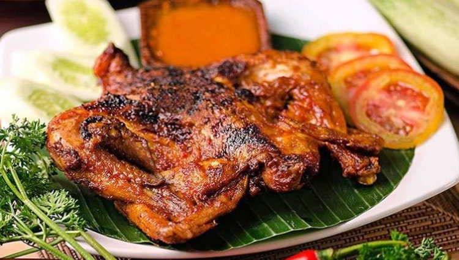
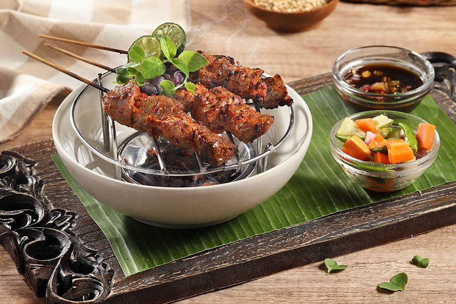
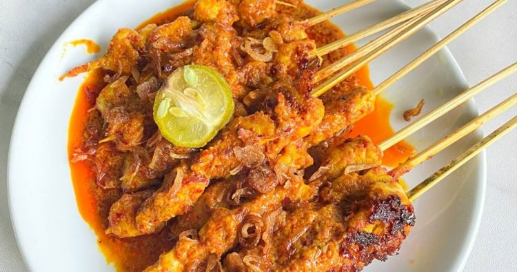

6 Menu Makanan Khas NTB 🌿

Ayam Taliwang
Ayam bakar pedas khas Lombok yang sangat populer dengan bumbu rica-rica dan sambal khas.
Bahan-bahan:
- 1 ekor ayam kampung, potong sesuai selera
- 10 cabai merah keriting
- 5 cabai rawit merah
- 6 siung bawang merah
- 4 siung bawang putih
- 2 tomat merah
- 1 sdm terasi bakar
- Garam dan gula merah secukupnya
- Minyak untuk menumis
Cara membuat:
- Haluskan cabai, bawang merah, bawang putih, tomat, dan terasi.
- Tumis bumbu halus hingga harum dan matang.
- Lumuri ayam dengan bumbu, diamkan selama 30 menit agar meresap.
- Bakar ayam sambil sesekali dioles sisa bumbu hingga matang dan beraroma.
- Sajikan dengan nasi putih dan lalapan segar.

Plecing Kangkung
Sayur kangkung rebus yang disiram sambal pedas manis khas Lombok.
Bahan-bahan:
- 1 ikat kangkung, rebus dan tiriskan
- 5 cabai merah keriting
- 3 cabai rawit
- 3 siung bawang putih
- 3 buah tomat merah
- 2 sdm air jeruk limau
- Garam dan gula merah secukupnya
Cara membuat:
- Haluskan cabai, bawang putih, dan tomat.
- Tambahkan air jeruk limau, garam, dan gula merah, aduk rata.
- Siramkan sambal ke kangkung rebus, aduk ringan.
- Sajikan segar sebagai pelengkap hidangan utama.

Sate Rembiga
Sate daging sapi khas Lombok dengan bumbu pedas khas yang menggoda selera.
Bahan-bahan:
- 500 gr daging sapi, potong dadu
- 8 cabai merah keriting
- 5 cabai rawit merah
- 6 siung bawang merah
- 4 siung bawang putih
- 2 sdm minyak goreng
- Garam dan gula merah secukupnya
Cara membuat:
- Haluskan cabai, bawang merah, dan bawang putih.
- Tumis bumbu halus dengan minyak hingga harum.
- Marinasi daging dengan bumbu, garam, dan gula merah selama minimal 1 jam.
- Tusuk daging pada tusuk sate, bakar hingga matang sambil dioles sisa bumbu.
- Sajikan dengan nasi putih dan sambal.

Jaje Tumpu
Kue tradisional Lombok dari singkong dan kelapa parut yang legit dan gurih.
Bahan-bahan:
- 500 gr singkong parut
- 200 gr kelapa parut
- 100 gr gula merah, serut halus
- Sejumput garam
- Daun pisang untuk membungkus
Cara membuat:
- Campur singkong parut, kelapa, gula merah, dan garam hingga rata.
- Bungkus adonan dengan daun pisang, sematkan lidi di ujungnya.
- Rebus atau kukus hingga matang sekitar 30 menit.
- Sajikan sebagai camilan tradisional yang lezat.

Pelecing Tahu
Tahu goreng disiram sambal plecing pedas yang khas dari NTB.
Bahan-bahan:
- 200 gr tahu putih, potong dadu dan goreng
- 5 cabai merah keriting
- 3 cabai rawit
- 3 siung bawang putih
- 2 buah tomat merah
- Garam dan gula merah secukupnya
- Air jeruk limau secukupnya
Cara membuat:
- Haluskan cabai, bawang putih, dan tomat.
- Tambahkan garam, gula merah, dan air jeruk limau, aduk rata.
- Siramkan sambal plecing di atas tahu goreng.
- Sajikan sebagai lauk pelengkap atau camilan pedas.

Sate Bulayak
Sate khas Lombok yang disajikan dengan lontong bulayak dan bumbu kacang pedas yang menggoda selera.
Bahan-bahan:
- 500 gr daging sapi, potong dadu
- 10 tusuk sate
- 250 gr beras untuk lontong
- 10 lembar daun pisang untuk membungkus lontong
- 150 gr kacang tanah goreng untuk bumbu kacang
- 5 cabai merah keriting
- 3 siung bawang putih
- 1 sdm gula merah
- Garam secukupnya
- Minyak goreng secukupnya
- Air secukupnya
Cara membuat:
- Cuci beras dan bungkus dengan daun pisang, kukus hingga matang untuk membuat lontong bulayak.
- Haluskan kacang tanah, cabai, bawang putih, gula merah, dan garam untuk membuat bumbu kacang.
- Tambahkan air sedikit demi sedikit sambil diaduk hingga bumbu kacang kental.
- Marinasi daging sapi dengan sebagian bumbu kacang selama minimal 1 jam.
- Tusuk daging pada tusuk sate dan bakar hingga matang sambil dioles sisa bumbu kacang.
- Sajikan sate dengan lontong bulayak dan siram dengan bumbu kacang yang tersisa.